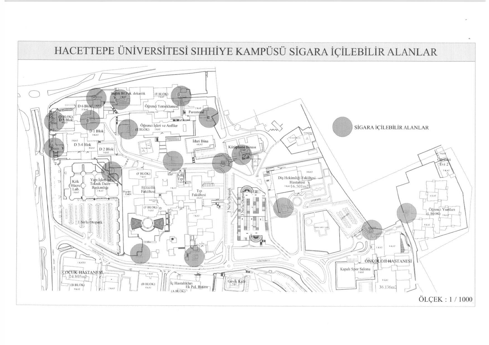

Kısaca
Kampüste tütün ürünü kullanmak, yalnızca Senato kararıyla belirlenmiş ve sahada mavi çizgiyle işaretlenmiş alanlarda serbesttir. Bu alanların dışında kalan tüm açık ve kapalı alanlarda — servis araçları ve üniversitenin kullandığı tüm araçlar dahil — yasaktır.
Yönerge Sıhhiye'de 25 Haziran 2026'dan, diğer kampüslerde 1 Eylül 2026'dan itibaren yürürlükte.
Sıhhiye Kampüsü Krokisi
Yönergenin EK-1'inde yer alan resmi kroki. Gri dairelerle işaretli noktalar sigara içilebilen alanları gösteriyor. Büyütmek için görsele dokunun.

Kroki ölçeği 1/1000. Krokide işaretli noktalar arasında Öğrenci Yemekhanesi, Kütüphane Binası, Öğrenci İşleri ve Anfiler, Diş Hekimliği Fakültesi Hastanesi, Onkoloji Hastanesi, Öğrenci Yurtları ve çeşitli blok çevreleri yer alıyor. Bu okuma krokiden yapılmıştır; kesin sınır için sahadaki mavi çizgilere bakın.
Beytepe İçin Durum
Yönerge Beytepe dahil diğer kampüslerde 1 Eylül 2026'dan itibaren yürürlükte, ancak yayımlanan yönerge metninin ekinde yalnızca Sıhhiye krokisi bulunuyor (EK-1). Beytepe için ayrı bir kroki yayımlandığında bu sayfaya eklenecek. O zamana kadar sahada mavi çizgiyle işaretli alanları ve “Tütün Ürünü İçilmez” uyarı levhalarını esas alın.
Alanlara İlişkin Kurallar
- Alanlar mavi çizgi ile belirlenir; izmarit ve paket çöpleri için ekipman bulunur.
- Alanlar binalardan en az 10 metre uzaklıkta konumlandırılır.
- Toplam alan, üniversitenin açık alanlarının %30'unu geçemez.
- Bu alanlarda yiyecek-içecek servisi yapılmaz.
- Alanlara, tütün kullanımının tehlikelerini anlatan sağlık uyarıları asılır.
- Kampüsteki hiçbir işletmede tütün ürünü satışı ve reklamı yapılamaz.
- Üniversitenin kullandığı araçlarda “Tütün Ürünü İçilmez” uyarısı bulunur.
Yönergedeki “tütün ürünü” tanımı sigara, elektronik sigara ve nargile dahil, nikotin içeren her türlü ürünü kapsıyor.
İhlal Halinde Ne Oluyor?
- Denetim görevlileri Dumansız Kampüs İhlal Tutanağı (EK-2) düzenler ve delilleriyle Genel Sekreterliğe bildirir.
- İhlal teyit edilirse 4207 sayılı Kanun kapsamında İdari Yaptırım Karar Tutanağı (EK-3) düzenlenir ve idari para cezası uygulanır.
- İhlal eden kişi öğrenci veya personel ise ayrıca disiplin işlemi başlatılır.
Geçiş dönemi: Yürürlük tarihinden itibaren 6 ay içinde, 4207 sayılı Kanun kapsamı dışında kalan alanlardaki ilk ihlalde yaptırım uygulanmadan önce yazılı uyarı yapılır.
İhbar ve bildirimler Genel Sekreterliğe veya üniversitenin Geri Bildirim Sistemi'ne yapılır.
Bırakmak İsteyenlere Destek
Yönerge, bağımlılıkla mücadele çalışmalarını şu birimlerin iş birliğiyle yürütüyor:
- Hacettepe Üniversitesi Bağımlılıkla Mücadele Komisyonu (HÜ-BMK)
- Tütün Kontrolü, Eğitim, Uygulama ve Araştırma Merkezi (HÜTKOM)
- Bağımlılık Uygulama ve Araştırma Merkezi (HÜBAUM)
- Sağlık Hizmetleri Birimi Yönetim Kurulu Başkanlığı
- Psikolojik Danışma Birimi
- Genç Yeşilay Topluluğu
Ayrıca her yıl 9 Şubat Sigarayı Bırakma Günü, 1–7 Mart Yeşilay Haftası ve 31 Mayıs Tütünsüz Bir Dünya Günü kapsamında farkındalık etkinlikleri düzenleniyor. Türkiye genelinde ücretsiz ALO 171 Sigara Bırakma Danışma Hattı da kullanılabilir.
Kaynak
Bu sayfadaki bilgiler Hacettepe Üniversitesi Senatosu'nun 25.06.2026 tarihli ve 2026-145 sayılı kararıyla kabul edilen Dumansız Kampüs Uygulama Yönergesi'nden alınmıştır. Yönergenin tam metni üniversitenin doküman havuzunda yayımlanıyor.
Bu sayfa bağımsız bir öğrenci kaynağıdır; Hacettepe Üniversitesi'nin resmi sayfası değildir. Yönerge maddeleri özetlenerek aktarılmıştır (son güncelleme: 6 Eylül 2026). Bağlayıcı olan yönergenin kendi metnidir.